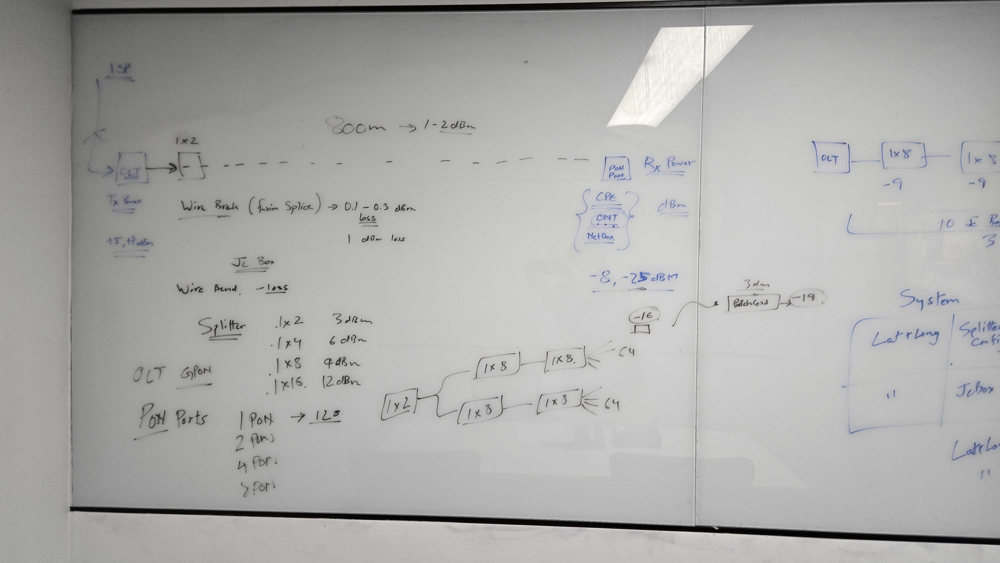
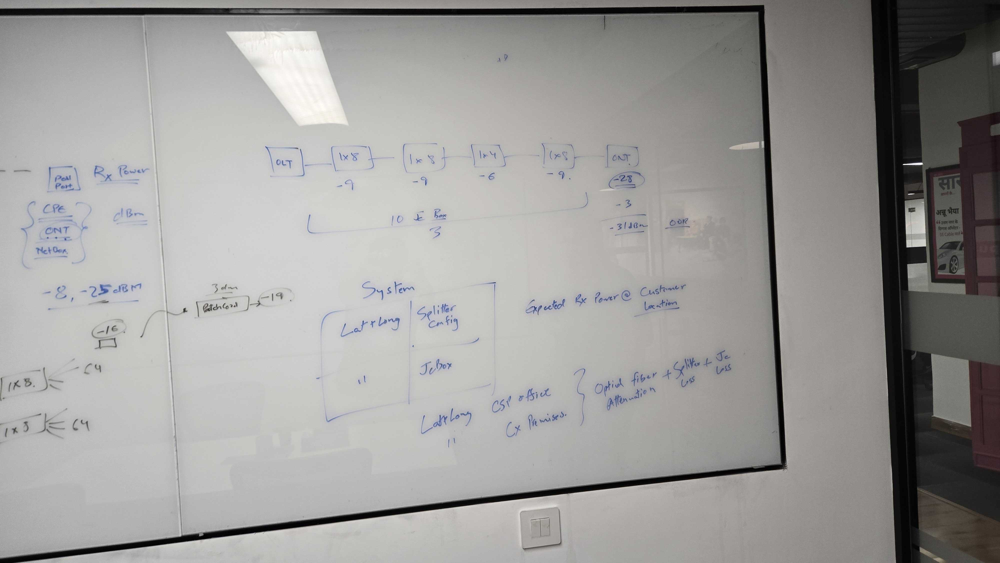

GPON / FTTH Optical Link Budget Notes
Cleaned OCR and interpretation from the two whiteboard photos. The board is about how an ISP fiber path is planned from OLT to splitters to ONT/CPE, and how every fiber segment, splice, connector, bend, patch cord, and splitter reduces received optical power.
Imagine one customer just asked for fiber internet.
The ISP already has internet at its office equipment. The question is whether enough optical power can travel from that office, through splitters and fiber joints, and still reach the customer modem.
Think of the whiteboard as the engineer checking that journey before connecting the customer. If the final number is inside the ONT range, the connection is healthy. If it falls too low, the route needs fewer splits, cleaner joints, or a different design.
The Journey Of One Light Signal
The board uses roughly +5 to +7 dBm as the starting transmit power.
Longer fiber adds attenuation. The board notes 800 m as about 1 to 2 dB.
A 1x8 splitter is easy to deploy, but it costs about 9 dB each time.
Splices, JC boxes, bends, patch cords, and dirty connectors all reduce power.
The customer modem does not care where the loss happened, only the final dBm.
The board marks -31 dBm as out of range because it is weaker than about -25 dBm.
Good Route vs Failing Route
Enough light reaches the customer
+5
-9
-2
-4
-10
This simplified route keeps the ONT inside the usable window. The exact value is less important than the habit: add every loss and compare the final power.
Too many splits make the light too weak
+5
-9
-9
-6
-31
This is the whiteboard story. Multiple splitters plus patch and field loss push the customer side below the ONT receive range.
How To Read Any Future Whiteboard Like This
Look for OLT Tx power, usually written in dBm.
Fiber, splitters, splices, JC boxes, patch cords, and bends are all in dB.
Start dBm minus total dB loss gives expected customer Rx power.
If it is below the lower limit, redesign the route or fix field loss.
Imported Whiteboard Photos


Start Here: What The Boxes Mean
Internet over fiber, in plain terms
The signal is light. The job is to keep enough light reaching the customer modem.
This is the starting point at the ISP side. It sends the optical signal into the fiber network.
This divides one fiber signal into many customer paths. More splits mean more loss.
Fiber joins, patch cords, bends, and connectors sit here. Each can add small loss.
This receives the light and turns it into home internet. It needs power in the safe range.
The Core Idea Visually
Receive power gauge
For this board, green is roughly -25 to -8 dBm.
How the signal gets weaker
Each row subtracts from the starting light level.
What A Splitter Does
The light is divided across 8 outputs. Each customer gets only a fraction of the original optical power.
If you split again and again, the customer-side light becomes too weak for the ONT to read reliably.
dB is the amount subtracted by a component, like a splitter, splice, connector, or fiber bend.
dBm is the actual optical power level measured at a point, such as the ONT receive port.
Raw OCR Transcript
- Tx power: approximately +5 to +7 dBm.
- 800 m fiber run: noted as about 1 to 2 dB of path loss.
- Wire break / fusion splice: about 0.1 to 0.3 dB loss.
- Wire bend / JC box: extra loss; one note marks about 1 dB loss.
- Patch cord: example shows -16 dBm becoming -19 dBm after about 3 dB loss.
- Splitter losses: 1x2 = 3 dB, 1x4 = 6 dB, 1x8 = 9 dB, 1x16 = 12 dB.
- PON ports: 1 PON can be planned up to 128 ONTs/customers; notes also list 2, 4, and 8 PON ports.
- Customer side: CPE / ONT / NetBox; Rx power is measured in dBm.
- Acceptable receive-power window on board: about -8 to -25 dBm.
- Example chain: OLT -> 1x8 -> 1x8 -> 1x4 -> 1x8 -> ONT.
- Example chain losses: -9, -9, -6, -9 dB, plus extra JC/patch/fiber loss.
- Example output: about -31 dBm, marked OOR, meaning out of range.
- System fields: lat/long, splitter config, JC box, CSP office, customer premises.
- System output: expected Rx power at customer location.
- Loss inputs: optical fiber attenuation, splitter loss, JC loss.
Network Model From The Board
A GPON/FTTH path starts at the OLT in the operator network, passes through feeder fiber, junction/JC boxes, splitters, distribution fiber, patch cords, and finally reaches the ONT at the customer premises. Every passive element adds loss. The ONT only works reliably if the final received optical power stays inside its supported range.
Correct Link-Budget Math
Important correction
The board sometimes writes losses as dBm. Strictly, loss is measured in dB, while the measured optical signal level is dBm. Example: a 1x8 splitter has about 9 dB loss; after that loss, the signal might measure -16 dBm or -19 dBm.
What out of range means
If the expected customer Rx power is weaker than the ONT sensitivity limit, the ONT may fail registration, flap, or work unreliably. The board marks about -31 dBm as OOR because it is below the noted -25 dBm lower limit.
Loss Reference Table
Smallest split shown on the board.
Twice the number of customer branches.
Common in the board examples.
Largest simple splitter value listed.
| Item | Whiteboard value | Meaning in planning |
|---|---|---|
| OLT Tx power | +5 to +7 dBm | Starting optical power before outside-plant losses. |
| 800 m fiber run | 1 to 2 dB noted | Fiber attenuation plus practical connector/splice margin. Pure fiber loss is usually lower, but field planning often carries margin. |
| Fusion splice / wire break repair | 0.1 to 0.3 dB | Small loss for a good splice; bad splice or dirty connector can be worse. |
| Wire bend / JC box | About 1 dB noted | Extra loss caused by tight bends, joints, and connector handling. |
| Patch cord | Example 3 dB drop | A patch cord or connector problem can noticeably reduce Rx power. |
| 1x2 splitter | 3 dB | Signal is split into 2 outputs. |
| 1x4 splitter | 6 dB | Signal is split into 4 outputs. |
| 1x8 splitter | 9 dB | Signal is split into 8 outputs. |
| 1x16 splitter | 12 dB | Signal is split into 16 outputs. |
| ONT / CPE Rx window | -8 to -25 dBm | Expected receive power should stay inside this operating window. |
PON capacity is not the same as power budget
The board notes that one PON can be planned for up to 128 ONTs/customers. That does not mean every splitter chain is automatically healthy. You still need enough received power at each ONT.
Capacity asks: how many customers can be attached? Link budget asks: will each customer's light level still work?
port
Worked Example From The Board
The board draws a chain with multiple splitters in series:
1. Add splitter loss
9 + 9 + 6 + 9 = 33 dB splitter loss before fiber, JC, patch, and connector margin.
2. Add field loss
The board also notes JC/patch/fiber losses, including a sample extra 3 dB drop.
3. Compare against ONT range
With a +5 dBm launch, +5 - 33 - 3 = -31 dBm, which is weaker than -25 dBm and therefore OOR.
System Design Implied By The Board
calculator
Customer ONT status: pass, warning, or out of range.
| Input / field | Why it matters | Output it supports |
|---|---|---|
| Customer latitude and longitude | Calculates route distance from CSP office, splitter, and JC box. | Fiber length and expected attenuation. |
| Splitter configuration | Identifies all split ratios in the customer path. | Total splitter loss. |
| JC box / junction data | Captures splices, connector points, bends, and patching losses. | Practical field margin. |
| CSP office and customer premises | Defines the end-to-end optical route. | Expected Rx power at the customer ONT. |
| Measured ONT Rx power | Validates whether the predicted design matches field reality. | Pass, warning, or out-of-range status. |
Operational Takeaways
Keep the split budget realistic
Stacking too many splitters quickly exhausts the optical budget. A 1x8 + 1x8 + 1x4 + 1x8 chain is already about 33 dB before any outside-plant loss.
Measure customer Rx power
The practical acceptance check is the ONT receive power at the customer location. The board's target window is about -8 to -25 dBm.
Track small losses
Splices, patch cords, tight bends, dirty connectors, and JC boxes look small individually, but together can push a borderline customer out of range.